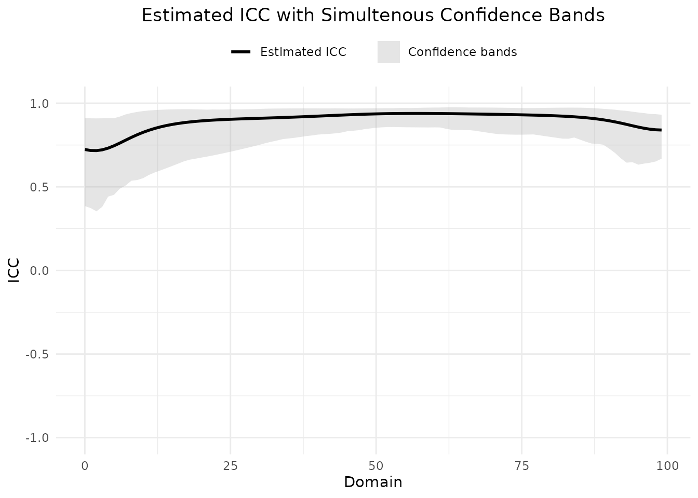
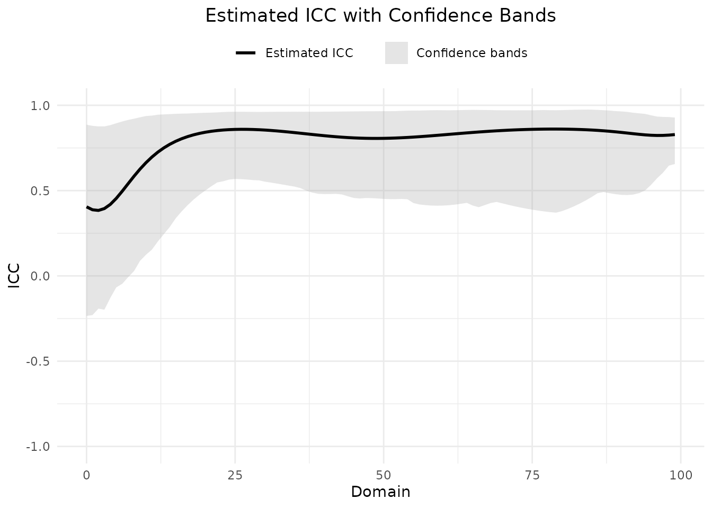

ConfSets package: Confidence sets for functional ICC in test–retest settings
ConfSets.RmdData
Data generation process
The data_TEST and data_RETEST data are
generated using the test_retest_generator function below
based on the Seydi MR, Pini A, Pataky TC, Schelin L. Confidence
sets for intraclass correlation coefficients in test–retest curve
measurements. Journal of Biomechanics. 2024 Aug 1;173:112232.
paper.
Simulated data are generated using a functional two-way mixed model:
where represents the observed function for individual at time for column (test or retest session). The term is the true function (curve) for individual at time , is a fixed within-individual (or column) effect for , and denotes an error function.
Both and can be expressed as:
where are cubic B-spline basis functions. The coefficients for the basis functions in these equations are assumed to be independent and normally distributed:
where and are mean parameters, and and are variance parameters.
Since represents the true curve for each individual, the variation between individual curves is captured by the variance parameters . The vector of mean values for the -basis function coefficients for each individual is denoted as .
For simulation, both and are generated by creating coefficients ( and ) for a cubic B-spline (order = 4) with basis functions over the domain . The parameters used are and . The test-retest effect function is assumed to be constant over the entire time interval, , with attaining values of 0.3. The variance parameters for the basis function coefficients are set to . The number of individuals is set to , and the number of evaluation points is set to 100.
test_retest_generator <- function(sigma_B, mu_f, c_j, n, time_point = 100){
c_i=c(c_j,-c_j) #the column effect
sigma_E=c(1,1,1,1,1) #sigma error
ncoef = 5 # number of basis coefficients
domain = seq(0,100,len=time_point) # domain
sigma_B_diag = diag(sigma_B) # covariance matrix between basis coefficients
sigma_E_diag = diag(sigma_E) # covariance matrix error term basis coefficients
n_order = 4 #order of bsplines
basis = create.bspline.basis(range(domain),nbasis=ncoef,norder=n_order) # b spline basis
mucoef = mu_f #mean of basis coef
mue=rep(0,ncoef) #mean of error
c_e_i = rmvnorm(n,mucoef,(sigma_B_diag)^2) #random basis coef for between individuals
c_e_1 = rmvnorm(n,mue,(sigma_E_diag)^2) #random basis coef for error in test
c_e_2 = rmvnorm(n,mue,(sigma_E_diag)^2) #random basis coef for error in retest
# functional format
f_e_i = fd(coef=t(c_e_i),basisobj=basis)
f_e1 = fd(coef=t(c_e_1),basisobj=basis)
f_e2 = fd(coef=t(c_e_2),basisobj=basis)
#discretize curves
e_i = t(eval.fd(domain,f_e_i))
e1 = t(eval.fd(domain,f_e1))
e2 = t(eval.fd(domain,f_e2))
y1 = e_i + c_i[1] + e1 #test
y2 = e_i + c_i[2] + e2 #retest
# return the test and retest data
return(list(Test=as.matrix(y1),Retes=as.matrix(y2)))
}
library(fda)
library(mvtnorm)
set.seed(123)
Data <- test_retest_generator(sigma_B = c(2.5,5,5,5,2.5),
mu_f = c(0,5,0,-5,0), c_j = 0.3,
n = 30, time_point = 100)Functional ICC
Depending on the unist of analysis are averaged or not, the functional ICC can be calculated using different designations. The designations are as follows: 1. “ICC(A,1)”: Single measuremnt, and 2. “ICC(A,k)”: Average measurement based on the designation mentioned in the paper: McGraw KO, Wong SP. Forming inferences about some intraclass correlation coefficients. Psychological methods. 1996 Mar;1(1):30..
Note that the estimated ICC can be negative and will be considered as zero.
ICC(A,1) designation
This designation is used to calculate the intraclass correlation coefficient (ICC) for a functional data set in a test-retest setting for both balanced and unbalanced cases. Unbalanced case refers to the case where we do not assume that the number of trials for each test session and each individual, is the same. The balanced case refers to the setting in which each individual contributes exactly one observation, or one summary of repeated observations (e.g., the average over trials), to the analysis.
Balanced case
In order to calculate the functional ICC for the test and retest data
with the designation “ICC(A,1)” and the belanced case, we use the
functional_ICC function with individuals =
NULL. The function also requires the test and retest data, the
designation, and the significance level as input arguments. The output
is a list containing the pointwise and integrated ICC values.
output_balanced_ICCA1 <- functional_ICC(test = TEST_data, retest = RETEST_data,
designation = "ICC(A,1)", individuals = NULL,
alpha = 0.05)
output_balanced_ICCA1$pointwise_ICC
#> [1] 0.7232935 0.7173577 0.7166171 0.7214663 0.7314508 0.7453887 0.7617302
#> [8] 0.7789596 0.7958703 0.8116618 0.8259045 0.8384457 0.8493108 0.8586240
#> [15] 0.8665537 0.8732795 0.8789742 0.8837947 0.8878794 0.8913482 0.8943037
#> [22] 0.8968338 0.8990134 0.9009069 0.9025696 0.9040495 0.9053884 0.9066230
#> [29] 0.9077854 0.9089038 0.9100028 0.9111038 0.9122247 0.9133800 0.9145810
#> [36] 0.9158353 0.9171468 0.9185158 0.9199389 0.9214091 0.9229161 0.9244465
#> [43] 0.9259844 0.9275120 0.9290100 0.9304587 0.9318378 0.9331277 0.9343099
#> [50] 0.9353667 0.9362829 0.9370528 0.9376803 0.9381713 0.9385330 0.9387735
#> [57] 0.9389016 0.9389269 0.9388591 0.9387084 0.9384843 0.9381966 0.9378542
#> [64] 0.9374653 0.9370374 0.9365768 0.9360888 0.9355773 0.9350451 0.9344935
#> [71] 0.9339223 0.9333299 0.9327130 0.9320663 0.9313830 0.9306537 0.9298667
#> [78] 0.9290075 0.9280582 0.9269967 0.9257964 0.9244249 0.9228432 0.9210042
#> [85] 0.9188517 0.9163195 0.9133311 0.9098007 0.9056368 0.9007507 0.8950715
#> [92] 0.8885714 0.8813006 0.8734309 0.8652935 0.8573884 0.8503387 0.8447760
#> [99] 0.8411871 0.8397857
output_balanced_ICCA1$integrated_ICC
#> [1] 0.8948601Unbalanced case
To calculate the functional ICC for the test and retest data with the
designation “ICC(A,1)” and the unbalanced case, we use the
functional_ICC. For example, consider the scenario with
unbalanced case, in total we have 28 individuals, and for example the
individuals number 2 has attended 1 test and 2 retest trials, number 3
has attended 3 test and 2 retest trials, the other individuals have
attended only one trials. Then vector should be like c(1:2,
rep(3, 3), 4:28, 1, rep(2,2), rep(3, 2), 4:28). For this
unbalanced case we use the same dataset and assume it is for an
unbalanced case. The other parameters are the same as the balanced
case.
output_unbalanced_ICCA1 <- functional_ICC(test = TEST_data, retest = RETEST_data,
designation = "ICC(A,1)",
individuals = c(1:2, rep(3, 3), 4:28, 1, rep(2,2), rep(3, 2), 4:28),
alpha = 0.05)
output_unbalanced_ICCA1$pointwise_ICC
#> [1] 0.4048062 0.3875587 0.3837391 0.3945786 0.4190687 0.4542392 0.4960855
#> [8] 0.5406308 0.5846673 0.6260292 0.6635164 0.6966576 0.7254548 0.7501767
#> [15] 0.7712163 0.7890021 0.8039490 0.8164347 0.8267905 0.8353005 0.8422051
#> [22] 0.8477061 0.8519725 0.8551458 0.8573451 0.8586716 0.8592127 0.8590450
#> [29] 0.8582379 0.8568557 0.8549599 0.8526113 0.8498710 0.8468017 0.8434686
#> [36] 0.8399391 0.8362828 0.8325711 0.8288756 0.8252675 0.8218152 0.8185832
#> [43] 0.8156301 0.8130073 0.8107577 0.8089147 0.8075021 0.8065338 0.8060143
#> [50] 0.8059397 0.8062978 0.8070673 0.8082191 0.8097204 0.8115355 0.8136263
#> [57] 0.8159529 0.8184743 0.8211490 0.8239360 0.8267954 0.8296890 0.8325810
#> [64] 0.8354381 0.8382304 0.8409310 0.8435165 0.8459668 0.8482647 0.8503960
#> [71] 0.8523490 0.8541142 0.8556837 0.8570510 0.8582104 0.8591565 0.8598839
#> [78] 0.8603866 0.8606577 0.8606886 0.8604691 0.8599867 0.8592263 0.8581704
#> [85] 0.8567994 0.8550923 0.8530288 0.8505923 0.8477762 0.8445922 0.8410835
#> [92] 0.8373412 0.8335224 0.8298648 0.8266852 0.8243493 0.8232061 0.8234960
#> [99] 0.8252710 0.8283677
output_unbalanced_ICCA1$integrated_ICC
#> [1] 0.7938654ICC(A,k) designation
For the “ICC(A,k)” designation, the functional ICC is only available for balanced cases. The “ICC(A,k)” designation is used to calculate the intraclass correlation coefficient (ICC) for a functional data set in a test-retest setting for the average measurement.
Balanced case
If the unit of analysis is the average measurement, the functional
ICC for the test and retest data with the designation “ICC(A,k)” can be
calculated using the functional_ICC function. Assume the
unit of analysis for analysis for the test and retest data is the
average measurement, and the number of trials for each test session and
each individual is the same.
output_balanced_ICCAk <- functional_ICC(test = TEST_data, retest = RETEST_data,
designation = "ICC(A,k)", individuals = NULL,
alpha = 0.05)
output_balanced_ICCAk$pointwise_ICC
#> [1] 0.8394316 0.8354202 0.8349178 0.8381997 0.8448993 0.8541235 0.8647524
#> [8] 0.8757474 0.8863338 0.8960412 0.9046524 0.9121245 0.9185160 0.9239351
#> [15] 0.9285066 0.9323537 0.9355894 0.9383132 0.9406103 0.9425532 0.9442031
#> [22] 0.9456113 0.9468215 0.9478706 0.9487901 0.9496071 0.9503453 0.9510249
#> [29] 0.9516641 0.9522783 0.9528811 0.9534844 0.9540978 0.9547294 0.9553850
#> [36] 0.9560689 0.9567831 0.9575275 0.9583002 0.9590973 0.9599130 0.9607401
#> [43] 0.9615700 0.9623930 0.9631988 0.9639768 0.9647164 0.9654072 0.9660395
#> [50] 0.9666041 0.9670931 0.9675036 0.9678380 0.9680995 0.9682920 0.9684200
#> [57] 0.9684881 0.9685016 0.9684656 0.9683853 0.9682661 0.9681130 0.9679306
#> [64] 0.9677235 0.9674954 0.9672498 0.9669895 0.9667165 0.9664324 0.9661376
#> [71] 0.9658323 0.9655154 0.9651852 0.9648388 0.9644726 0.9640814 0.9636590
#> [78] 0.9631974 0.9626869 0.9621155 0.9614686 0.9607285 0.9598736 0.9588778
#> [85] 0.9577099 0.9563327 0.9547026 0.9527703 0.9504821 0.9477841 0.9446309
#> [92] 0.9409985 0.9369057 0.9324399 0.9277827 0.9232193 0.9191168 0.9158575
#> [99] 0.9137443 0.9129169
output_balanced_ICCAk$integrated_ICC
#> [1] 0.9435222Averaging reduces measurement error, so this ICC generally yields higher reliability values compared to ICC(A,1).
Confidence sets
Seydi MR, Pini A, Pataky TC, Schelin L. Confidence sets for intraclass correlation coefficients in test–retest curve measurements. Journal of Biomechanics. 2024 Aug 1;173:112232. investigates methods for constructing confidence sets for curve-level intraclass correlation coefficients (ICC), which can be expressed as either an ICC curve or an integrated ICC value. The confidence sets have not been validated for unbalanced cases so far.
Integrated ICC
When estimating the integrated ICC (Pini A, Markström JL, Schelin L. Test–retest reliability measures for curve data: An overview with recommendations and supplementary code. Sports biomechanics. 2022 Feb 7;21(2):179-200.), we obtain a single value. The uncertainty associated with this estimate can be expressed using a confidence interval. The bootstrap method enables the generation of confidence intervals at the confidence level. Seydi MR, Pini A, Pataky TC, Schelin L. Confidence sets for intraclass correlation coefficients in test–retest curve measurements. Journal of Biomechanics. 2024 Aug 1;173:112232. shows that the “Normal” methods are the most reliable for constructing confidence intervals for the integrated ICC.
ICC curve
“Rank” is the valid method to construct simultaneous confidence bands for the ICC curve based on Seydi MR, Pini A, Pataky TC, Schelin L. Confidence sets for intraclass correlation coefficients in test–retest curve measurements. Journal of Biomechanics. 2024 Aug 1;173:112232..
Note that the the pointwise_F_bands_ICC function
calculates the pointwise confidence bands based on the F distribution
for functional ICC in a test-retest setting. The pointwise F bands do
not provide simultaneous coverage.
The code below calculates the confidence sets for the functional ICC
in a test-retest setting. The function requires the test and retest
data, if it is unbalanced case it requires individuals, and
it also accepts the type of confidence sets, number of bootstrap
samples, designation, and significance level.
By default, resample_trials = FALSE: each bootstrap
sample resamples individuals while retaining all observed trial rows for
each selected individual. Set resample_trials = TRUE to
additionally resample trial rows with replacement within each selected
individual and session. The default is shown explicitly in the examples
below.
Confidence Sets (Balanced)
set.seed(123)
confsets_outputs_balance <- Conf_sets(test = TEST_data, retest = RETEST_data,
type = c("Rank", "Normal"), n_boot=1000,
designation = "ICC(A,1)", alpha = 0.05,
resample_trials = FALSE)
confsets_outputs_balance$pointwise_ICC
#> [1] 0.7232935 0.7173577 0.7166171 0.7214663 0.7314508 0.7453887 0.7617302
#> [8] 0.7789596 0.7958703 0.8116618 0.8259045 0.8384457 0.8493108 0.8586240
#> [15] 0.8665537 0.8732795 0.8789742 0.8837947 0.8878794 0.8913482 0.8943037
#> [22] 0.8968338 0.8990134 0.9009069 0.9025696 0.9040495 0.9053884 0.9066230
#> [29] 0.9077854 0.9089038 0.9100028 0.9111038 0.9122247 0.9133800 0.9145810
#> [36] 0.9158353 0.9171468 0.9185158 0.9199389 0.9214091 0.9229161 0.9244465
#> [43] 0.9259844 0.9275120 0.9290100 0.9304587 0.9318378 0.9331277 0.9343099
#> [50] 0.9353667 0.9362829 0.9370528 0.9376803 0.9381713 0.9385330 0.9387735
#> [57] 0.9389016 0.9389269 0.9388591 0.9387084 0.9384843 0.9381966 0.9378542
#> [64] 0.9374653 0.9370374 0.9365768 0.9360888 0.9355773 0.9350451 0.9344935
#> [71] 0.9339223 0.9333299 0.9327130 0.9320663 0.9313830 0.9306537 0.9298667
#> [78] 0.9290075 0.9280582 0.9269967 0.9257964 0.9244249 0.9228432 0.9210042
#> [85] 0.9188517 0.9163195 0.9133311 0.9098007 0.9056368 0.9007507 0.8950715
#> [92] 0.8885714 0.8813006 0.8734309 0.8652935 0.8573884 0.8503387 0.8447760
#> [99] 0.8411871 0.8397857
confsets_outputs_balance$integrated_ICC
#> [1] 0.8948601
confsets_outputs_balance$CSets
#> $Rank
#> $Rank$upper
#> [1] 0.9109349 0.9098049 0.9093961 0.9098510 0.9108352 0.9103481 0.9201392
#> [8] 0.9332100 0.9416266 0.9481061 0.9529756 0.9565557 0.9591242 0.9609065
#> [15] 0.9623328 0.9634574 0.9641335 0.9644653 0.9642682 0.9635151 0.9626312
#> [22] 0.9616420 0.9627144 0.9623372 0.9625199 0.9634930 0.9632875 0.9635628
#> [29] 0.9642143 0.9647791 0.9660418 0.9671193 0.9678871 0.9682557 0.9685682
#> [36] 0.9688242 0.9690223 0.9691603 0.9692351 0.9692426 0.9691780 0.9690360
#> [43] 0.9690494 0.9695888 0.9690759 0.9688220 0.9687022 0.9688909 0.9692528
#> [50] 0.9696571 0.9699791 0.9702160 0.9703672 0.9704417 0.9716169 0.9716544
#> [57] 0.9712643 0.9722440 0.9730359 0.9736464 0.9740821 0.9743488 0.9753692
#> [64] 0.9762584 0.9757097 0.9750620 0.9743163 0.9742946 0.9742221 0.9740578
#> [71] 0.9738000 0.9734455 0.9729890 0.9724231 0.9717373 0.9711891 0.9714577
#> [78] 0.9712219 0.9718375 0.9722569 0.9727333 0.9731284 0.9734192 0.9735752
#> [85] 0.9735561 0.9733088 0.9725052 0.9712977 0.9690517 0.9665780 0.9641312
#> [92] 0.9612194 0.9569234 0.9543161 0.9494277 0.9449411 0.9409808 0.9362022
#> [99] 0.9346187 0.9313038
#>
#> $Rank$lower
#> [1] 0.3849427 0.3728851 0.3536920 0.3810059 0.4415820 0.4520246 0.4888919
#> [8] 0.5081331 0.5367549 0.5405899 0.5517839 0.5712345 0.5860944 0.5984903
#> [15] 0.6114801 0.6248791 0.6385402 0.6523516 0.6623098 0.6683164 0.6748457
#> [22] 0.6809992 0.6878155 0.6949213 0.7023088 0.7099647 0.7178690 0.7259944
#> [29] 0.7343068 0.7427658 0.7513999 0.7611060 0.7694996 0.7771004 0.7855391
#> [36] 0.7892819 0.7932229 0.7981687 0.8035073 0.8072627 0.8123562 0.8147546
#> [43] 0.8168654 0.8199681 0.8244102 0.8320817 0.8352919 0.8385847 0.8449454
#> [50] 0.8492522 0.8534573 0.8558736 0.8574814 0.8575393 0.8568957 0.8563580
#> [57] 0.8559394 0.8556527 0.8555097 0.8550672 0.8556939 0.8550635 0.8471194
#> [64] 0.8411618 0.8400738 0.8393036 0.8392187 0.8355051 0.8301203 0.8247663
#> [71] 0.8194675 0.8152199 0.8135742 0.8124979 0.8119886 0.8120332 0.8126097
#> [78] 0.8134245 0.8083352 0.8032727 0.7982294 0.7932072 0.7882230 0.7876811
#> [85] 0.7949036 0.7823249 0.7699012 0.7588395 0.7573554 0.7518154 0.7288070
#> [92] 0.7029330 0.6707765 0.6447001 0.6475435 0.6325631 0.6390111 0.6440156
#> [99] 0.6517723 0.6682822
#>
#>
#> $Normal
#> [1] 0.8558274 0.9338927
confsets_outputs_balance$CSets$Rank
#> $upper
#> [1] 0.9109349 0.9098049 0.9093961 0.9098510 0.9108352 0.9103481 0.9201392
#> [8] 0.9332100 0.9416266 0.9481061 0.9529756 0.9565557 0.9591242 0.9609065
#> [15] 0.9623328 0.9634574 0.9641335 0.9644653 0.9642682 0.9635151 0.9626312
#> [22] 0.9616420 0.9627144 0.9623372 0.9625199 0.9634930 0.9632875 0.9635628
#> [29] 0.9642143 0.9647791 0.9660418 0.9671193 0.9678871 0.9682557 0.9685682
#> [36] 0.9688242 0.9690223 0.9691603 0.9692351 0.9692426 0.9691780 0.9690360
#> [43] 0.9690494 0.9695888 0.9690759 0.9688220 0.9687022 0.9688909 0.9692528
#> [50] 0.9696571 0.9699791 0.9702160 0.9703672 0.9704417 0.9716169 0.9716544
#> [57] 0.9712643 0.9722440 0.9730359 0.9736464 0.9740821 0.9743488 0.9753692
#> [64] 0.9762584 0.9757097 0.9750620 0.9743163 0.9742946 0.9742221 0.9740578
#> [71] 0.9738000 0.9734455 0.9729890 0.9724231 0.9717373 0.9711891 0.9714577
#> [78] 0.9712219 0.9718375 0.9722569 0.9727333 0.9731284 0.9734192 0.9735752
#> [85] 0.9735561 0.9733088 0.9725052 0.9712977 0.9690517 0.9665780 0.9641312
#> [92] 0.9612194 0.9569234 0.9543161 0.9494277 0.9449411 0.9409808 0.9362022
#> [99] 0.9346187 0.9313038
#>
#> $lower
#> [1] 0.3849427 0.3728851 0.3536920 0.3810059 0.4415820 0.4520246 0.4888919
#> [8] 0.5081331 0.5367549 0.5405899 0.5517839 0.5712345 0.5860944 0.5984903
#> [15] 0.6114801 0.6248791 0.6385402 0.6523516 0.6623098 0.6683164 0.6748457
#> [22] 0.6809992 0.6878155 0.6949213 0.7023088 0.7099647 0.7178690 0.7259944
#> [29] 0.7343068 0.7427658 0.7513999 0.7611060 0.7694996 0.7771004 0.7855391
#> [36] 0.7892819 0.7932229 0.7981687 0.8035073 0.8072627 0.8123562 0.8147546
#> [43] 0.8168654 0.8199681 0.8244102 0.8320817 0.8352919 0.8385847 0.8449454
#> [50] 0.8492522 0.8534573 0.8558736 0.8574814 0.8575393 0.8568957 0.8563580
#> [57] 0.8559394 0.8556527 0.8555097 0.8550672 0.8556939 0.8550635 0.8471194
#> [64] 0.8411618 0.8400738 0.8393036 0.8392187 0.8355051 0.8301203 0.8247663
#> [71] 0.8194675 0.8152199 0.8135742 0.8124979 0.8119886 0.8120332 0.8126097
#> [78] 0.8134245 0.8083352 0.8032727 0.7982294 0.7932072 0.7882230 0.7876811
#> [85] 0.7949036 0.7823249 0.7699012 0.7588395 0.7573554 0.7518154 0.7288070
#> [92] 0.7029330 0.6707765 0.6447001 0.6475435 0.6325631 0.6390111 0.6440156
#> [99] 0.6517723 0.6682822
confsets_outputs_balance$CSets$Normal
#> [1] 0.8558274 0.9338927Confidence Sets (Unbalanced)
Consider the scenario with unbalanced case, in total we have 28 individuals, and for example the individuals number 2 has attended 1 test and 2 retest trials, number 3 has attended 3 test and 2 retest trials, the other individuals have attended only one trials. Then vector should be like c(1:2, rep(3, 3), 4:28, 1, rep(2,2), rep(3, 2), 4:28).
set.seed(1234)
confsets_outputs_unbalance <- Conf_sets(test = TEST_data, retest = RETEST_data,
individuals = c(1:2, rep(3, 3), 4:28, 1,
rep(2,2), rep(3, 2), 4:28),
type = c("Rank", "Normal"), n_boot=1000,
designation = "ICC(A,1)", alpha = 0.05,
resample_trials = FALSE)
confsets_outputs_unbalance$pointwise_ICC
#> [1] 0.4048062 0.3875587 0.3837391 0.3945786 0.4190687 0.4542392 0.4960855
#> [8] 0.5406308 0.5846673 0.6260292 0.6635164 0.6966576 0.7254548 0.7501767
#> [15] 0.7712163 0.7890021 0.8039490 0.8164347 0.8267905 0.8353005 0.8422051
#> [22] 0.8477061 0.8519725 0.8551458 0.8573451 0.8586716 0.8592127 0.8590450
#> [29] 0.8582379 0.8568557 0.8549599 0.8526113 0.8498710 0.8468017 0.8434686
#> [36] 0.8399391 0.8362828 0.8325711 0.8288756 0.8252675 0.8218152 0.8185832
#> [43] 0.8156301 0.8130073 0.8107577 0.8089147 0.8075021 0.8065338 0.8060143
#> [50] 0.8059397 0.8062978 0.8070673 0.8082191 0.8097204 0.8115355 0.8136263
#> [57] 0.8159529 0.8184743 0.8211490 0.8239360 0.8267954 0.8296890 0.8325810
#> [64] 0.8354381 0.8382304 0.8409310 0.8435165 0.8459668 0.8482647 0.8503960
#> [71] 0.8523490 0.8541142 0.8556837 0.8570510 0.8582104 0.8591565 0.8598839
#> [78] 0.8603866 0.8606577 0.8606886 0.8604691 0.8599867 0.8592263 0.8581704
#> [85] 0.8567994 0.8550923 0.8530288 0.8505923 0.8477762 0.8445922 0.8410835
#> [92] 0.8373412 0.8335224 0.8298648 0.8266852 0.8243493 0.8232061 0.8234960
#> [99] 0.8252710 0.8283677
confsets_outputs_unbalance$integrated_ICC
#> [1] 0.7938654
confsets_outputs_unbalance$CSets
#> $Rank
#> $Rank$upper
#> [1] 0.8862492 0.8796683 0.8764674 0.8762971 0.8836925 0.8946774 0.9051768
#> [8] 0.9142069 0.9215023 0.9296042 0.9371402 0.9396245 0.9449742 0.9466963
#> [15] 0.9483568 0.9501219 0.9512572 0.9519026 0.9535299 0.9550275 0.9562086
#> [22] 0.9571405 0.9584648 0.9605224 0.9618063 0.9621106 0.9621229 0.9618742
#> [29] 0.9613882 0.9611049 0.9613335 0.9617117 0.9619964 0.9621996 0.9623321
#> [36] 0.9624033 0.9622973 0.9623928 0.9623243 0.9622206 0.9627727 0.9628882
#> [43] 0.9632484 0.9636159 0.9639819 0.9643366 0.9646686 0.9649653 0.9649868
#> [50] 0.9653986 0.9655062 0.9655267 0.9659561 0.9673424 0.9685977 0.9691790
#> [57] 0.9692504 0.9701339 0.9710737 0.9714472 0.9711155 0.9706923 0.9712758
#> [64] 0.9720217 0.9727477 0.9731993 0.9729035 0.9724580 0.9718586 0.9710996
#> [71] 0.9708775 0.9707816 0.9705775 0.9706849 0.9707485 0.9707025 0.9714708
#> [78] 0.9719886 0.9712900 0.9710480 0.9717016 0.9728822 0.9738061 0.9744482
#> [85] 0.9747731 0.9746696 0.9731529 0.9712457 0.9692830 0.9659418 0.9642386
#> [92] 0.9613616 0.9563422 0.9529337 0.9496054 0.9413473 0.9341498 0.9319010
#> [99] 0.9311369 0.9281688
#>
#> $Rank$lower
#> [1] -0.234804573 -0.230004013 -0.192028763 -0.198215244 -0.129293557
#> [6] -0.067531193 -0.046608669 -0.007836888 0.028572496 0.088058887
#> [11] 0.123787158 0.153776761 0.201457048 0.244290092 0.286351850
#> [16] 0.337103548 0.377644106 0.414142018 0.446866007 0.475724710
#> [21] 0.500727384 0.525396686 0.547732728 0.554749435 0.564459495
#> [26] 0.568335795 0.567119996 0.564795234 0.561500897 0.560112307
#> [31] 0.552492315 0.547108798 0.541347136 0.535368636 0.529332394
#> [36] 0.523392080 0.514453463 0.499432734 0.488170444 0.481019953
#> [41] 0.479668041 0.479880213 0.480835854 0.477029146 0.466326610
#> [46] 0.456598883 0.453687043 0.456589356 0.455794151 0.453757019
#> [51] 0.451276720 0.450013844 0.449932810 0.451014456 0.449254063
#> [56] 0.427088706 0.418840046 0.414839713 0.412367188 0.411451049
#> [61] 0.412086078 0.414230544 0.417805934 0.422699264 0.427992898
#> [66] 0.412157946 0.402740332 0.414597151 0.426896631 0.433435239
#> [71] 0.424929845 0.416310502 0.408316253 0.400956962 0.394235650
#> [76] 0.388153057 0.382713809 0.377934324 0.373852713 0.370541022
#> [81] 0.379460274 0.392560511 0.407350288 0.423856692 0.442145342
#> [86] 0.462316352 0.484493526 0.491415984 0.484757515 0.479048188
#> [91] 0.475039025 0.473773963 0.476622065 0.485226541 0.501286842
#> [96] 0.533770530 0.571837596 0.604822286 0.646564325 0.655644910
#>
#>
#> $Normal
#> [1] 0.6326087 0.9551220
confsets_outputs_unbalance$CSets$Rank
#> $upper
#> [1] 0.8862492 0.8796683 0.8764674 0.8762971 0.8836925 0.8946774 0.9051768
#> [8] 0.9142069 0.9215023 0.9296042 0.9371402 0.9396245 0.9449742 0.9466963
#> [15] 0.9483568 0.9501219 0.9512572 0.9519026 0.9535299 0.9550275 0.9562086
#> [22] 0.9571405 0.9584648 0.9605224 0.9618063 0.9621106 0.9621229 0.9618742
#> [29] 0.9613882 0.9611049 0.9613335 0.9617117 0.9619964 0.9621996 0.9623321
#> [36] 0.9624033 0.9622973 0.9623928 0.9623243 0.9622206 0.9627727 0.9628882
#> [43] 0.9632484 0.9636159 0.9639819 0.9643366 0.9646686 0.9649653 0.9649868
#> [50] 0.9653986 0.9655062 0.9655267 0.9659561 0.9673424 0.9685977 0.9691790
#> [57] 0.9692504 0.9701339 0.9710737 0.9714472 0.9711155 0.9706923 0.9712758
#> [64] 0.9720217 0.9727477 0.9731993 0.9729035 0.9724580 0.9718586 0.9710996
#> [71] 0.9708775 0.9707816 0.9705775 0.9706849 0.9707485 0.9707025 0.9714708
#> [78] 0.9719886 0.9712900 0.9710480 0.9717016 0.9728822 0.9738061 0.9744482
#> [85] 0.9747731 0.9746696 0.9731529 0.9712457 0.9692830 0.9659418 0.9642386
#> [92] 0.9613616 0.9563422 0.9529337 0.9496054 0.9413473 0.9341498 0.9319010
#> [99] 0.9311369 0.9281688
#>
#> $lower
#> [1] -0.234804573 -0.230004013 -0.192028763 -0.198215244 -0.129293557
#> [6] -0.067531193 -0.046608669 -0.007836888 0.028572496 0.088058887
#> [11] 0.123787158 0.153776761 0.201457048 0.244290092 0.286351850
#> [16] 0.337103548 0.377644106 0.414142018 0.446866007 0.475724710
#> [21] 0.500727384 0.525396686 0.547732728 0.554749435 0.564459495
#> [26] 0.568335795 0.567119996 0.564795234 0.561500897 0.560112307
#> [31] 0.552492315 0.547108798 0.541347136 0.535368636 0.529332394
#> [36] 0.523392080 0.514453463 0.499432734 0.488170444 0.481019953
#> [41] 0.479668041 0.479880213 0.480835854 0.477029146 0.466326610
#> [46] 0.456598883 0.453687043 0.456589356 0.455794151 0.453757019
#> [51] 0.451276720 0.450013844 0.449932810 0.451014456 0.449254063
#> [56] 0.427088706 0.418840046 0.414839713 0.412367188 0.411451049
#> [61] 0.412086078 0.414230544 0.417805934 0.422699264 0.427992898
#> [66] 0.412157946 0.402740332 0.414597151 0.426896631 0.433435239
#> [71] 0.424929845 0.416310502 0.408316253 0.400956962 0.394235650
#> [76] 0.388153057 0.382713809 0.377934324 0.373852713 0.370541022
#> [81] 0.379460274 0.392560511 0.407350288 0.423856692 0.442145342
#> [86] 0.462316352 0.484493526 0.491415984 0.484757515 0.479048188
#> [91] 0.475039025 0.473773963 0.476622065 0.485226541 0.501286842
#> [96] 0.533770530 0.571837596 0.604822286 0.646564325 0.655644910
confsets_outputs_unbalance$CSets$Normal
#> [1] 0.6326087 0.9551220Plot
The plot_ICC function shows the estimated ICC with
simultenous confidence bands based on the Rank method. The function
requires the output from the Conf_sets function as input.
The output of Conf_sets function must contain type =
“Rank”.
plot_ICC(confsets_outputs_balance, estimated_ICC_color = "black",
bands_color = "darkgrey",
plot_title = "Estimated ICC with Simultenous Confidence Bands",
xlable = "Domain", ylable = "ICC",
plot_legend_position = "top")
Estimated ICC and simultenous confidence bands for the test and retest data
plot_ICC(confsets_outputs_unbalance, estimated_ICC_color = "black",
bands_color = "darkgrey",
plot_title = "Estimated ICC with Confidence Bands",
xlable = "Domain", ylable = "ICC",
plot_legend_position = "top")
Estimated ICC and simultenous confidence bands for the test and retest data